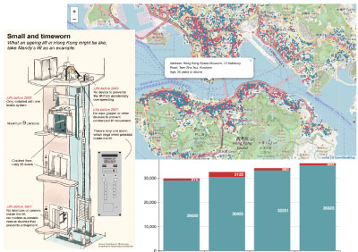
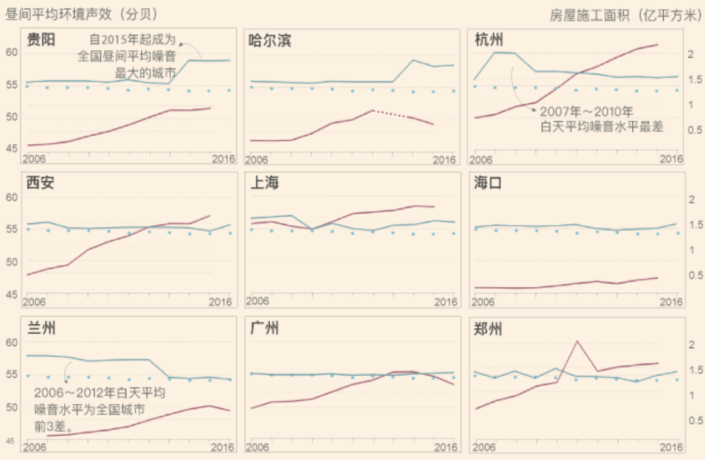
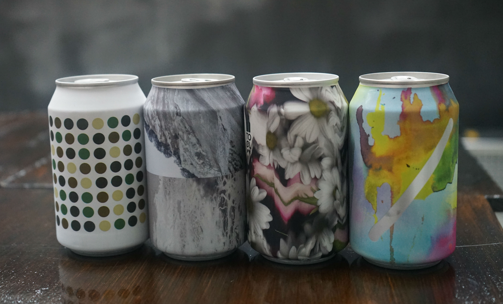
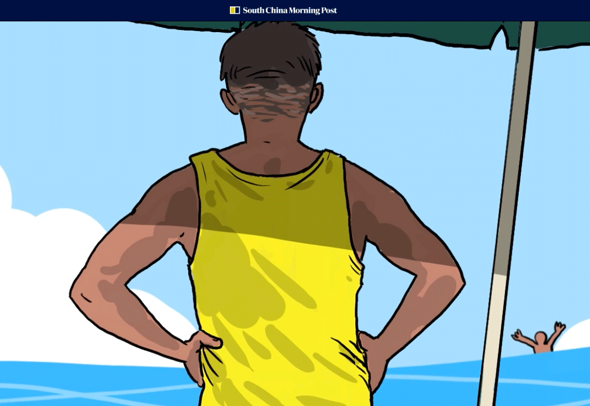
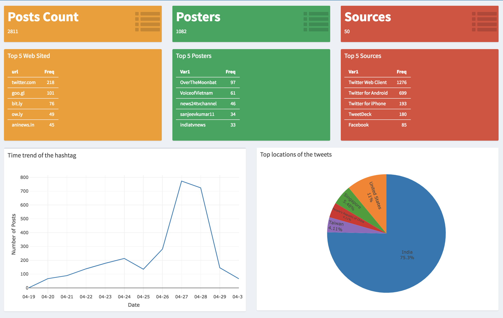
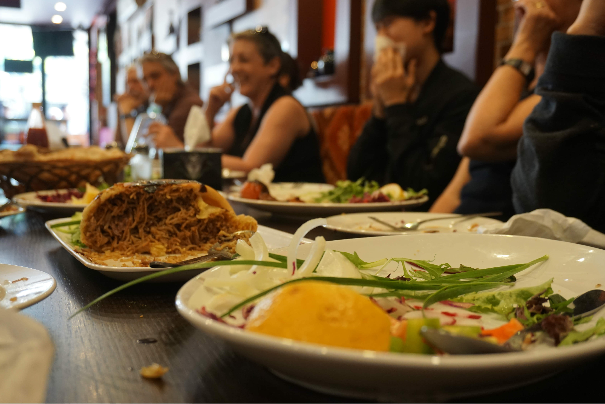
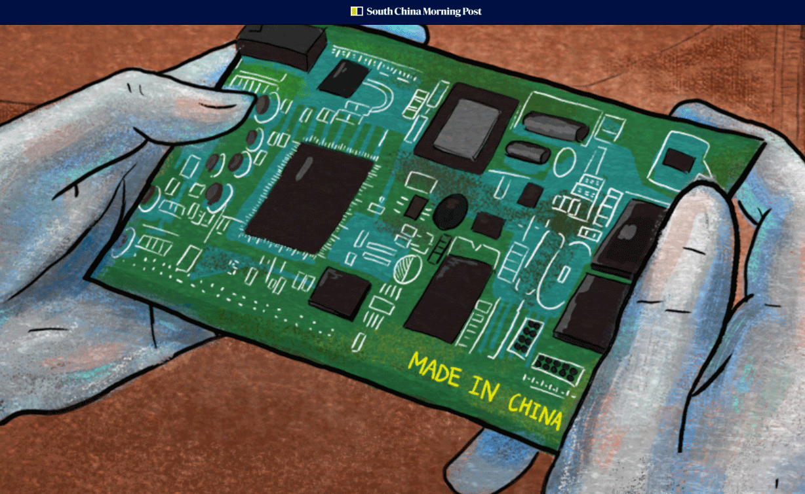
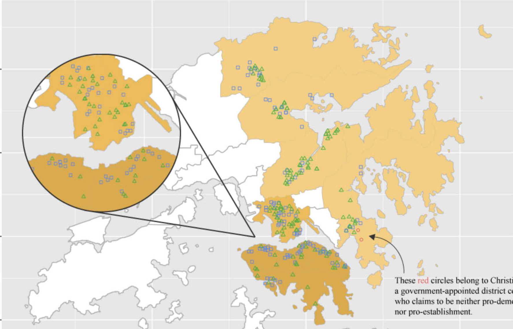
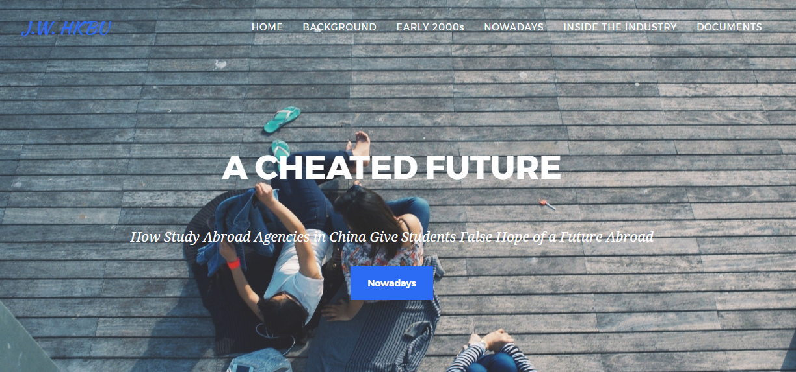
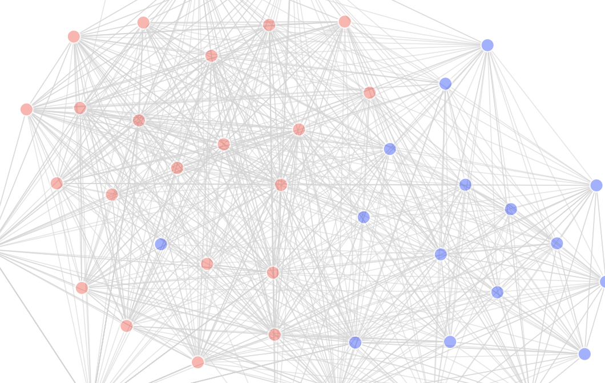

Julianna Wu
Data & Visual Journalist
Twitter
Instagram
500px
Email
Inforgraphic for print

Data journalism: Ageing Lifts Issue in HK

Data Journalism: Work published at FTChinese.com
Data journalism: Film Script Censorship in China

Data journalism: Craft Beer HK
Inforgraphic stories published at Abacus

Graphics feature: Lifeguard in HK
Data journalism: Urban Noise in China

R-Data Dashboard: Twitter hashtag analysis

Multimedia: Food Tour Sydney

Graphics feature: Made in China 2025

R-Mapping: HK LegCo by-election result

Multimedia: Study-abroad Agency in China

D3: Twitter network of US senators